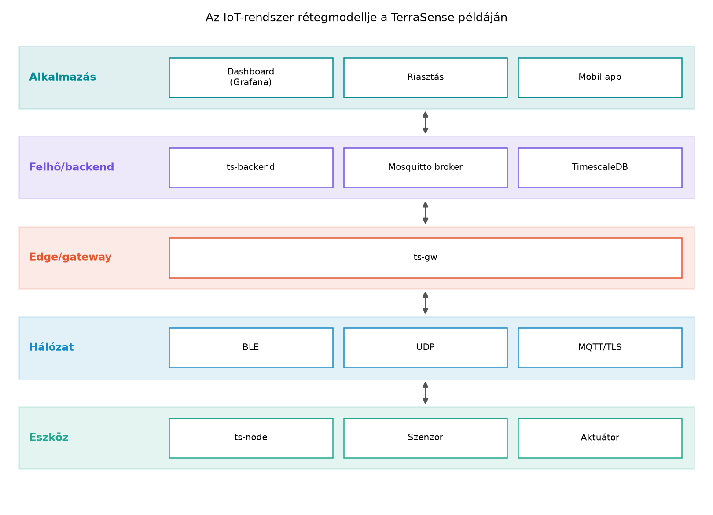
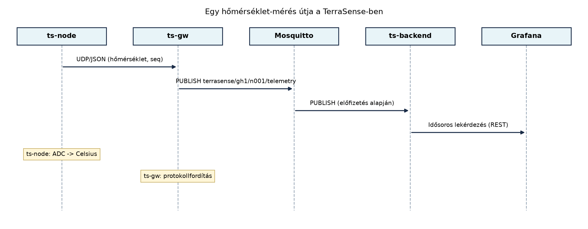

Egy üvegházban több száz növény sorsa múlhat azon, hogy egy hőmérséklet- vagy talajnedvesség-érték időben eljut-e a gazdához, és hogy a rendszer automatikusan kinyitja-e a szelepet, mielőtt kiszárad a termés. Ha egyetlen mikrovezérlőre bízzuk az egészet, amely lokálisan mér és kapcsol, az már önmagában is hasznos – de ha a gazda több hektárról, több üvegházból akar egyetlen felületen áttekintést kapni, és távolról beavatkozni, akkor a rendszernek hálózatra, üzenetközvetítőre, adatbázisra és megjelenítő rétegre is szüksége van. Az IoT-rendszer éppen ezt a teljes láncot jelenti a fizikai jel digitalizálásától a felhasználói döntésig vagy az automatikus beavatkozásig.
Definíció. Az IoT-rendszer olyan elosztott rendszer, amely a fizikai világ jeleit szenzorokkal digitalizálja, az adatokat valamilyen hálózaton továbbítja, feldolgozza, és az eredményt felhasználói felületen megjeleníti, vagy aktuátorokon keresztül visszahat a fizikai világra.
A definícióban kulcsfontosságú a visszahatás: a tiszta adatgyűjtés még nem feltétlenül IoT, ahhoz a vezérlési irány is hozzátartozik, még ha az csak egy relé bekapcsolása is.
Határok és rokon fogalmak.
- A beágyazott rendszer (embedded system) zárt,
önállóan működő számítógép, amelynek nincs feltétlenül hálózati
kapcsolata. Egy IoT-eszköz mindig beágyazott rendszer, de a beágyazott
rendszer nem mindig IoT. - Az IIoT (Industrial Internet
of Things) az ipari környezetben alkalmazott IoT, ahol a megbízhatóság,
a determinisztikus időzítés és a meglévő ipari protokollok (például
Modbus, OPC UA) integrációja hangsúlyosabb. - A CPS
(cyber-physical system, kiberfizikai rendszer) olyan rendszer, ahol a
számítási folyamatok és a fizikai folyamatok szorosan összefonódnak,
gyakran valós idejű visszacsatolással. Az IoT és a CPS átfedik egymást;
az IoT inkább a hálózati és felhőszolgáltatási oldalt hangsúlyozza, a
CPS a fizikai folyamatokkal való szoros kölcsönhatást.
Rétegmodell. Az IoT-rendszereket gyakorlati okokból rétegekre bontjuk, mert a különböző funkciók más-más hardveren, operációs rendszeren és programozási modellen futnak. A TerraSense mintarendszerben a következő öt réteget különböztetjük meg:

A rétegek felelőssége:
Adatút és vezérlési út. A rendszerben kétirányú kommunikáció zajlik. A telemetria (felfelé irányuló adat) a szenzortól a felhasználóig halad; a parancs (lefelé irányuló vezérlés) a felhasználótól vagy a backend logikától indul, és az aktuátorig jut.

A telemetria útja során az adat többször átalakul: az ADC-nyersértékből fizikai mennyiség (például °C) lesz, majd strukturált üzenet (JSON, CBOR vagy más), később adatbázisrekord, végül vizuális grafikonpont. A vezérlési út fordított irányú: a felhasználó vagy egy szabály elindít egy parancsot, amely a backendtől MQTT-üzenetként a gatewayen át az eszközhöz jut, ahol az aktuátort vezérli, majd visszanyugtázást küld.
Szereplők. Egy IoT-rendszer életciklusában több szervezeti és emberi szereplő érintett:
Az IoT-architektúra tervezésekor a legfontosabb kérdés, hogy melyik rétegbe helyezzük a logikát. A döntés kihat az energiafogyasztásra, a késleltetésre, a sávszélességre és az adatvédelemre.
| Szempont | Eszközön | Edge/gateway | Felhőben |
|---|---|---|---|
| Energiafelhasználás | magas, ha sok számítás | közepes | alacsony az eszköz számára |
| Késleltetés a döntésig | minimális | néhány ms–s | 100 ms–s vagy több |
| Sávszélesség-igény | alacsony, ha előszűr | csökkentheti | magas, ha minden nyers adat megy |
| Rugalmasság, frissíthetőség | nehézkes (OTA szükséges) | egyszerűbb | egyszerű |
| Adatvédelem | helyben marad az adat | részben helyben | központosított, kockázatos |
A TerraSense-ben a szenzoradat előfeldolgozása (például átlagolás, küszöbérték-figyelés) az eszközön vagy a gatewayen történik, míg a hosszú távú tárolás és a komplex elemzés a felhőben. A döntést mindig a konkrét követelményekhez kell kötni: ha a szelepet azonnal kell zárni fagy esetén, a szabályt az eszközre vagy a gatewayre kell tenni, nem a felhőbe.
Tegyük fel, hogy a TerraSense n001 csomópontja 10
másodpercenként méri a hőmérsékletet, és a ts-gw gateway
továbbítja a felhőbe. Kövessük végig egy mérés útját lépésről
lépésre:
node_id azonosítót (n001), a monoton növekvő
seq sorszámot és az eseményidőt (ts, UTC epoch
ms). Az üzenet tartalma például:
{"node_id":"n001","seq":42,"ts":1712345678000,"temperature":23.4}.ts-gw-nek. A gateway
fogadja, ellenőrzi a sorszámot, és átalakítja MQTT-üzenetté.ts-gw publikálja a
terrasense/gh1/n001/telemetry topicra a Mosquitto
brokerhez. A broker az előfizetőknek továbbítja az üzenetet.ts-backend
feliratkozott a brokerre, és fogadja az üzenetet. Ellenőrzi az
idempotenciát és a sémát, majd beírja a TimescaleDB-be.Ez a példa mutatja, hogy az adat minden rétegben más-más reprezentációt kap: analóg jel → digitális szám → fizikai mennyiség → JSON-üzenet → adatbázisrekord → vizuális pont.
Továbbvitt eredmény. Az itt bevezetett rétegmodell (eszköz–hálózat–edge/gateway–felhő–alkalmazás) és az adatút/vezérlési út kettőssége az egész könyv alapja. A Nem funkcionális követelmények: energia, költség, élettartam, megbízhatóság, biztonság alfejezet ezekre a rétegekre építve tárgyalja a nem funkcionális elvárásokat, a A TerraSense mintarendszer architektúrája alfejezet konkrét komponensekké bontja a rétegeket, a A gateway szerepe: híd, puffer, biztonsági határ alfejezet a gateway felelősségét mélyíti el, a Ingest: MQTT-ből a backendbe, idempotensen alfejezet pedig a felhőbe érkező adatok fogadását részletezi.
Mivel ez a fejezet elméleti, az ellenőrzés leginkább a modell megértésére irányul. Tegyük fel a következő kérdéseket, és próbáljuk megválaszolni őket a rétegmodell alapján:
seq sorszám és a node_id lehetővé teszi az
üzenetek azonosítását és a duplikátumok kiszűrését.Gyakorlati ellenőrzésként a későbbi laborokban minden réteghez lesz konkrét teszt: az eszköz logjai, az MQTT-forgatókönyv, a backend API válaszai.
A rétegek: eszköz (ts-node, szenzorok, aktuátorok; érzékelés és beavatkozás), hálózat (BLE, UDP, MQTT/TLS; adatcsere), edge/gateway (ts-gw; protokollfordítás, pufferezés), felhő/backend (ts-backend, Mosquitto, TimescaleDB; feldolgozás, tárolás), alkalmazás (Grafana, riasztás; megjelenítés, felhasználói interakció).
Napi üzenetszám: . Napi adatmennyiség: . Éves adat: . Tárhelyigény tehát körülbelül 158 MB (tömörítés és indexelés nélkül).
Elfogadható topic-struktúra (a könyv későbbi konvencióját megalapozva):
terrasense/<site>/<node>/telemetry –
telemetriaterrasense/<site>/<node>/state –
állapotterrasense/<site>/<node>/cmd –
parancsokterrasense/<site>/<node>/cmd/result –
parancsválaszokterrasense/<site>/<node>/status – jelenlét
(retained, Last Will)<site> például gh1, a
<node> például n001.Hiba lehetőségek rétegenként:
seq nem növekszik. Ellenőrzés: eszköz
logja, UDP-csomag a gatewayen.ping,
MQTT-kapcsolat állapota.systemctl status.mosquitto_sub feliratkozás.Ebben az alfejezetben definiáltuk az IoT-rendszert, és megkülönböztettük a beágyazott rendszerektől, az IIoT-tól és a CPS-től. Bevezettük a TerraSense öt rétegét: eszköz, hálózat, edge/gateway, felhő/backend és alkalmazás. Végigkövettük egy hőmérséklet-mérés útját a szenzortól a dashboardig, láttatva az adat átalakulásait. Bemutattuk a szereplőket (gyártó, üzemeltető, felhasználó, platformszolgáltató). A továbbvitt eredmény a rétegmodell és az adatút/vezérlési út kettőssége, amelyre a Nem funkcionális követelmények, a TerraSense architektúra, a Gateway szerepe és a Backend ingest alfejezetek építenek. A döntési szempontoknál kiemeltük, hogy a logika elhelyezése hatással van az energiafelhasználásra, a késleltetésre és a sávszélességre.
A fejezet kiindulópontjai:
- NIST Cybersecurity for IoT Program:
https://www.nist.gov/itl/applied-cybersecurity/nist-cybersecurity-iot-program
- ETSI EN 303 645:
https://www.etsi.org/deliver/etsi_en/303600_303699/303645/
- AWS IoT dokumentáció: https://docs.aws.amazon.com/iot/
Ezek a hivatkozások kiindulópontként szolgálnak, tartalmukat jelen alfejezet nem ellenőrizte. A rétegmodell és az adatút általános elvek, amelyek a felsorolt forrásokban is megtalálhatók, de a konkrét API-k, szolgáltatásnevek és jogszabályi hivatkozások ellenőrzést igényelnek a felhasználás előtt.